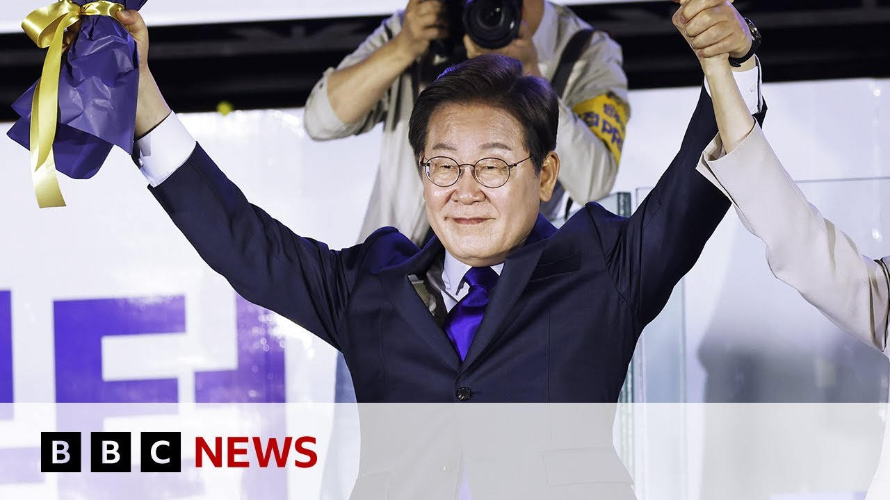

【反对党在数月戒严混乱后赢得韩国大选 | BBC新闻】
Summary: South Korea's Liberal candidate Lee Jay Young has won the snap presidential election with record turnout, following the impeachment of former President Yun Yu over martial law attempts. President-elect Lee vows to restore democracy, stabilize the economy, and prevent future coups, while defeated rival Kim Munu concedes gracefully. The election marks a decisive rejection of military rule after months of turmoil.
摘要： 韩国自由派候选人李在明在提前总统选举中以创纪录的投票率获胜，此前前总统尹锡悦因试图实施戒严而遭弹劾。当选总统李在明承诺恢复民主、稳定经济并防止未来政变，而落败的对手金武铉大方认输。这次选举标志着韩国在数月动荡后对军事统治的明确拒绝。

⏱️ Estimated Reading Time: 6 min
In the last few moments, we have received some breaking news from South Korea.
就在刚才，我们收到了来自韩国的突发新闻。
We've just received the official final results in South Korea's snap presidential election.
我们刚刚收到了韩国提前总统选举的官方最终结果。
And as we've been reporting, the Liberal candidate, Lee Jay Young, has won the presidency with the highest turnout for decades.
正如我们一直报道的，自由派候选人李在明以数十年来最高的投票率赢得了总统职位。
The election was called after the previous president, Yun Yu, was impeached for attempting to impose martial law.
这次选举是在前总统尹锡悦因试图实施戒严而遭弹劾后举行的。
The new president's inauguration is expected on Wednesday.
新总统的就职典礼预计将在周三举行。
Speaking in the last hour, Mr. Lee said he would do his utmost not to disappoint the expectations of voters and would work from day one to fix the economy and ensure there are no more coup attempts.
李在明在一小时前表示，他将竭尽全力不辜负选民的期望，并从第一天起就努力修复经济，确保不再发生政变企图。
The first mission that you have granted me was to overcome the insurrection and not to threaten the civilian with the weapons that shouldn't be used against the people.
你们赋予我的首要任务是平息叛乱，而不是用本不该对准人民的武器威胁平民。
And secondly, I will recover the economy and recover the people's lives.
其次，我将重振经济，恢复人民的生活。
Well, the defeated candidate, Kim Munu, conceded shortly after Mr. Lee's victory speech.
落败的候选人金武铉在李在明胜选演讲后不久认输。
In a short address, he thanked his supporters and wished Mr. Lee luck.
他在简短讲话中感谢支持者并祝愿李在明好运。
Take a listen.
请听。
Honorable South Korean people, I will accept the decision made by the South Korean people.
尊敬的韩国人民，我将接受韩国人民作出的决定。
And I'd like to congratulate newly elected candidate, Mr. Lee.
我要祝贺新当选的候选人李在明先生。
And I will not forget all the support from the people of South Korea.
我不会忘记韩国人民的所有支持。
And I also like to thank my colleagues from the party for their hard work.
我还要感谢党内同事的辛勤工作。
South Korea has been constantly moving forward despite the threat and difficult times.
尽管面临威胁和困难时期，韩国一直在不断前进。
I also like to sincerely thank the South Korean people for their overflowing support for someone who is not good enough.
我还要衷心感谢韩国人民对我这个不够优秀的人的鼎力支持。
Well, let's take a closer look at how the day unfolded and what it now means for South Korea.
让我们更详细地看看这一天是如何展开的，以及它对韩国现在意味着什么。
Our soul correspondent Gene McKenzie has more.
本台驻首尔记者吉恩·麦肯锡带来更多报道。
As the exit polls came in, the Lee camp erupted.
出口民调结果出炉时，李在明的阵营沸腾了。
After a chaotic six months that nearly saw South Korea back under military rule, power is changing hands.
在经历了近乎让韩国重回军事统治的混乱六个月后，权力正在交接。
This candidate campaigned on one very clear promise that he was going to ensure martial law can never happen again.
这位候选人在竞选时作出了一个非常明确的承诺，即确保戒严永远不会再次发生。
And it seems tonight that this is what South Koreans have decisively chosen.
而今晚看来，这正是韩国人民果断选择的。
That they have once again rejected what happened on that night back in December when the country was so nearly brought back under military rule.
他们再次拒绝了去年12月那个夜晚发生的事，当时国家差点重回军事统治。
We have gained hope again.
我们重获希望。
For the last 6 months, the Korean people have overcome the cold winter and have come together.
过去六个月，韩国人民度过了寒冬，团结一致。
The celebration started before the polls even closed.
庆祝活动在投票结束前就开始了。
This victory was clear from the start.
这场胜利从一开始就很明朗。
Lee, long considered a divisive character who has criminal charges against him, pulled in people with all shades of politics.
长期被视为分裂人物且面临刑事指控的李在明吸引了各种政治立场的人。
Desperate to steer South Korea back onto stable ground.
他们迫切希望将韩国带回稳定的轨道。
As they cast their ballots, people felt the weight of their vote.
投票时，人们感受到了选票的分量。
For Houn, today was about building a future for his two-year-old daughter.
对Houn来说，今天是为两岁女儿构建未来。
We need to stop the martial law from happening again in the future.
我们需要阻止戒严在未来再次发生。
I hope after today, our president will better serve the Korean people and stabilize the country so we don't have to worry anymore.
我希望今天之后，我们的总统能更好地服务韩国人民并稳定国家，让我们不再担忧。
Before Lee can fix the country, he must first face urgent challenges abroad.
在李在明修复国家之前，他必须先应对国外的紧迫挑战。
There are existential negotiations to be had with President Trump, not just about tariffs, but South Korea's security.
需要与特朗普总统进行关乎存亡的谈判，不仅涉及关税，还有韩国的安全。
The US defends South Korea.
美国保卫韩国。
There are thousands of troops stationed here, but Trump is reportedly considering removing some of them.
这里有数千名驻军，但据报道特朗普正考虑撤走部分军队。
Seoul is hoping to use these ships as a bargaining chip.
首尔希望以这些舰船作为谈判筹码。
This is the largest shipyard in the world.
这是全球最大的造船厂。
They build 40 to 50 ships here every year.
这里每年建造40到50艘船。
From warships to gas tankers and these huge commercial vessels.
从军舰到天然气运输船，再到这些大型商用船只。
In contrast, US ship building is in decline.
相比之下，美国的造船业正在衰退。
Its naval fleet now pales in comparison to China's.
其海军舰队如今与中国相比相形见绌。
And Korea is hoping to step in to build and repair America's warships.
而韩国希望介入建造和维修美国的军舰。
The ship building is the strongest part to negotiate the tariffs with the United States government.
造船业是与美国政府谈判关税时最有力的部分。
Already they've gathered to welcome their president, but this honeymoon will barely last the night.
人们已经聚集起来迎接他们的总统，但这段蜜月期恐怕连一夜都持续不了。
Lee must take office immediately, and Koreans are trusting him to steer the country responsibly.
李在明必须立即就职，韩国人民信任他能负责任地引领国家。
Gene McKenzie, BBC News, Soul.
吉恩·麦肯锡，BBC新闻，首尔。
Come on.
来吧。
Okay.
好的。